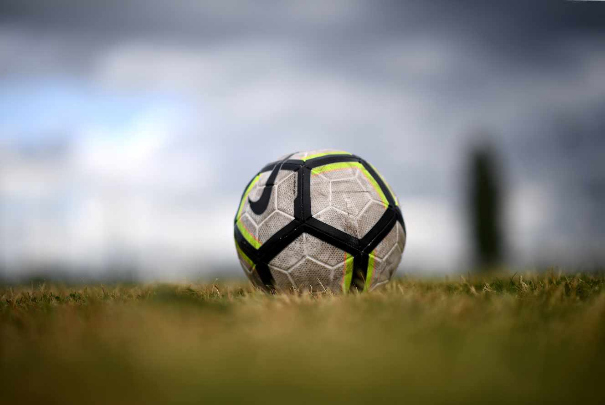

La Coupe de France, un peu d’air frais pour certains clubs de football amateurs
La Coupe de France résiste à tout. Même la seconde guerre mondiale n’avait pas empêché la tenue de la doyenne des compétitions de football en France[...]